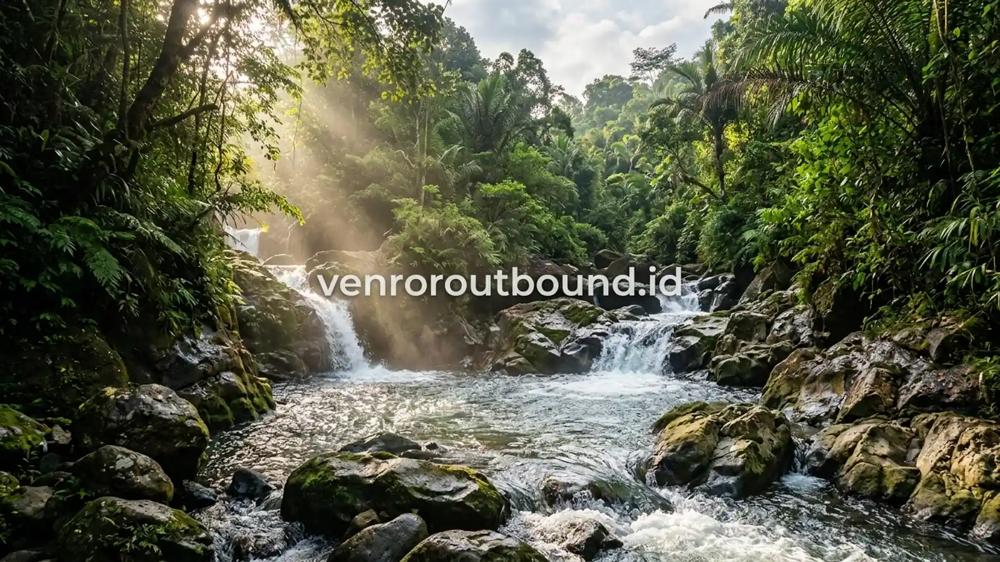

1. Mengapa Menggabungkan Team Building Darat dan Rafting dalam Satu Hari?
Jawaban singkat: Paket Outbound Plus Rafting memadukan simulasi kerja sama tim darat di pagi hari dengan petualangan arung jeram sungai di siang hari. Format ini dapat menjadi solusi praktis dan menjadi pilihan yang menarik bagi perusahaan yang ingin menggabungkan evaluasi komunikasi kelompok dengan petualangan pemacu adrenalin dalam satu agenda efisien.
Bagi divisi Human Resources (HRD) maupun Event Organizer internal perusahaan, mengelola kegiatan luar ruang kerap dihadapkan pada dua tujuan yang ingin dicapai secara bersamaan: di satu sisi, manajemen menginginkan adanya penguatan karakter kerja sama (team building), kepemimpinan, dan komunikasi; di sisi lain, peserta mengharapkan rekreasi yang seru, segar, dan melepaskan kejenuhan rutinitas kantor.
Mengakomodasi kedua kebutuhan tersebut secara terpisah sering kali memakan biaya ganda dan waktu berhari-hari. Oleh karena itu, kehadiran paket outbound plus rafting terintegrasi menjadi opsi yang semakin diminati karena menyatukan sesi edukatif berbasis simulasi kelompok di darat dan petualangan mengarungi jeram sungai dalam rangkaian waktu satu hari yang terencana rapi.

Rafting vs Offroad: Memilih Tantangan Wisata Outbound yang Tepat
Analisis mendalam karakteristik medan sungai versus jalur darat perbukitan untuk rombongan kantor.
2. Struktur Alur Kegiatan 1-Day Outbound Plus Rafting
Rancangan jadwal yang seimbang memastikan energi peserta tetap terjaga dari awal hingga akhir kegiatan. Berikut adalah contoh alur pelaksanaan standar yang biasa diaplikasikan:
- Sesi Pagi (08.30 – 11.30) — Team Building & Fun Games Darat: Diawali dengan ice breaking untuk mencairkan suasana, pembentukan regu secara acak, dilanjutkan dengan serangkaian simulasi pemecahan masalah (problem solving games) yang melatih koordinasi dan strategi kelompok di lapangan terbuka.
- Sesi Siang (11.30 – 13.00) — Istirahat & Makan Siang Bersama: Jeda waktu untuk santap siang masakan khas lokal, ibadah, dan persiapan berganti pakaian basah untuk aktivitas air.
- Sesi Petualangan (13.00 – 15.30) — Pengarungan Rafting: Pembagian perlengkapan keamanan (pelampung, helm, dayung), briefing keselamatan oleh pemandu bersertifikat, dan pengarungan jeram sungai sepanjang rute yang telah ditentukan.
- Sesi Penutup (15.30 – 16.30) — Bilas & Debriefing: Membersihkan diri, menikmati kudapan hangat, serta sesi perenungan singkat (debriefing) bersama fasilitator untuk merangkum poin-poin pembelajaran kegiatan.


Cara Ampuh Menghilangkan Kejenuhan Karyawan Setelah Rilis Projek Besar
Mengapa aktivitas gabungan alam terbuka efektif mengembalikan motivasi dan sinergi kerja staf.
3. Unsur Kolaborasi dan Kepemimpinan yang Terbangun
Keunikan dari paket terintegrasi ini terletak pada jembatan pembelajaran yang terhubung antara darat dan air. Saat berada di perahu karet, setiap peserta memegang peran krusial:
- Kepemimpinan Cepat Tanggap: Perahu membutuhkan arahan ritme kayuhan dari komando skipper dan kesepakatan kru depan untuk bermanuver melewati rintangan batu.
- Kepercayaan Antaranggota: Di tengah arus deras, rasa saling percaya tumbuh secara alami saat rekan sekelompok saling menjaga keseimbangan perahu.
- Komunikasi Efektif Tanpa Gangguan: Suara gemuruh air sungai menuntut setiap peserta mendengarkan instruksi secara jelas dan meresponsnya dengan tindakan nyata.

Vendor Outbound Perusahaan di Batu Malang: Panduan SOP & Legalitas
Panduan penting mengevaluasi sertifikasi instruktur BNSP dan lisensi skipper FAJI sebelum booking.
4. Lokasi Arung Jeram Favorit untuk Program Kantor di Jawa Timur
Bagi perusahaan yang merencanakan kegiatan di wilayah Jawa Timur, beberapa destinasi sungai yang dapat dipertimbangkan meliputi:
- Sungai Kaliwatu di Kota Batu: Terkenal dengan aksesibilitas yang sangat dekat dari pusat akomodasi hotel dan resort di kawasan wisata Batu Malang, memiliki grade jeram yang ramah bagi pemula.
- Sungai Kromong di Pacet Mojokerto: Menyajikan pemandangan pegunungan yang asri dengan air sungai jernih pegunungan dan kontur jeram yang bervariasi.
- Sungai Baru di Banyuwangi: Destinasi menantang di ujung timur pulau Jawa dengan jeram alami berarus deras yang melintasi kawasan perkebunan tropis.
5. Tips Memilih Provider Outbound Plus Rafting yang Kredibel
Untuk menjamin keselamatan dan kelancaran acara, pastikan provider yang Anda tunjuk memenuhi kriteria berikut:
- Memiliki fasilitator experiential learning yang tersertifikasi Badan Nasional Sertifikasi Profesi (BNSP).
- Menyediakan pemandu arung jeram (skipper) dan tim penyelamat sungai berlisensi resmi Federasi Arung Jeram Indonesia (FAJI).
- Menggunakan peralatan pelampung, helm, dan perahu dalam kondisi terawat serta didukung perlindungan asuransi kegiatan luar ruang.
6. Investasi Terbaik untuk Mempererat Hubungan Kerja
Menghadirkan kegiatan paket outbound plus rafting adalah salah satu cara paling efektif untuk membangun sinergi tim yang kokoh sekaligus memberikan apresiasi rekreasi yang tak terlupakan bagi seluruh karyawan.
Ketika tawa bersama di lapangan hijau bersambung dengan sorak keberhasilan menaklukkan jeram sungai, hubungan antarrekan kerja tidak lagi sebatas rekan meja kantor, melainkan bertransformasi menjadi tim yang solid, saling mendukung, dan siap menghadapi target perusahaan berikutnya.
Rencanakan Paket Outbound Plus Rafting Perusahaan Anda
Dapatkan penawaran khusus rombongan perusahaan dengan menghubungi kami di +62 82211221909. Konsultasi rancangan acara gratis tanpa syarat.
Hubungi Vendor Outbound via WhatsAppPertanyaan Sering Diajukan (FAQ)

Arby Ardiansyah
Praktisi pengembangan SDM dan perancang program experiential learning dengan pengalaman lebih dari 8 tahun memfasilitasi ratusan kegiatan outbound korporat, BUMN, dan wisata petualangan di seluruh Jawa Timur.